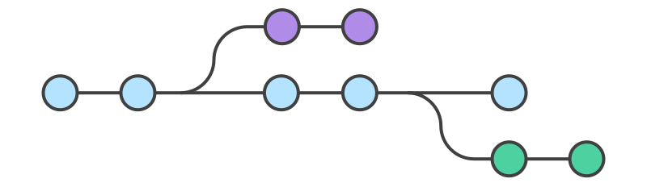

Get it done
Pablo Margreff
Nobody - mas eu sei um pouco de git
pmargreff@gmail.com | github.com/pmargreff
-
Indíce:
- O que é?
- Configurando
- Commit
- Branches
- Remote
- Logs
- Desfazendo as coisas
- Referências
O que é?
- Um controle de versão de terceira geração
- Uma ferramenta que protege você de você mesmo.
-
Gerações anteriores:
- Primeira geração: 1972
- Segunda geração: 1990
- Terceira geração: 2005
- lentas
- ocupavam espaço
- centralizadas
-
Curiosidades
- Primeiro commit no primeiro dia de desenvolvimento no próprio projeto
- Primeira versão em 7 de abril de 2005
-
Mas qual a diferença entre o git e os outros Sistemas de controles?
- Ele não vê os arquivos como arquivos, mas sim como um grande arquivo
Pra que serve?
- Rastreamento do histórico
- Controlar versão (WOW)
- Reverter alterações
- Descentralização
- Desenvolvimento paralelo
- Redundâncias
- Segurança
- Validar se seus arquivos são realmente seus
- Performance
- Não desperdiça espaço criando cópias
- Compressão de dados
Configurando
git config --{nível} user.name "Batman"git config --{nível} user.email batman@hotmail.com -
Níveis:
- system - todos repositórios, todos usuários
- global - todos repositórios, usuário atual
- local - repositório atual, usuário atual
- file - arquivos específicos
git config --{nível} --unset {propriedade}-
Tarefa 1:
- Criar um repositório
- Configurações básicas (a nível de repositório)
- Iniciar git
Commit
Visualmente

Mas antes, precisamos selecionar o que queremos salvar.
git statusAdd
-
Pode ser feito de duas maneiras:
- Manual
- Iterativo
Por arquivo
git add {files}Todos arquivos - novos/alterações/exclusões
git add .git add -iCommit
git commit -m "My awesome feature"ou
git commit Delete
git rm {files}-
Tarefa 2.0:
- Criar um ou mais arquivos
- Adicionar de maneira manual
- Commit
- Criar outro arquivo
- Adicionar de maneira iterativa
- Commit
-
Tarefa 2.1:
- Deletar primeiro arquivo criado
- Deletar arquivo do git
- Commit
gitignore
-
Mas o que fazer com arquivos que eu quero ignorar?
- Arquivos gerados de compilação
- Arquivos de configuração
- Logs
touch .gitignoregit rm --cached file1.cCuidado para não confundir com:
git rm file1.c-
Tarefa 2.3:
- Ignorar arquivos de compilação gerados pelo java
- Commit
- Ignore um arquivo criado na tarefa 2.1
- Commit
Branches
-
Como o prório nome diz, podemos trabalhar com um sistema de "galhos"
- Fazer experimentos
- Desenvolver multiplas coisas ao mesmo tempo
- Tudo isso sem comprometer o código original
Visualmente 
-
Tarefa 3.1:
- Criar uma nova branch e separar arquivos de estilo da tarefa 1
- Commit
Checkout
Merge
E esse é um dos pontos fortes do git, em um merge, ele "sabe" quais partes de um arquivo deve sustituir por outro, de maneira automática.

-
Tarefa 3.2
- Fazer o merge da branch criada na branch master
Remote
Visualmente

Agredadores
- Serve para você compartilhar código
- De maneira pública - open source
- De maneira privade - proprietário
- Backup
- Espelhos
Funcionam como redes socias
-
Mais famosos
- Github
- Gitlab
- Bitbucket
- Proprietário


git remote add {alias} {url}-
Tarefa 4.0:
- Criar uma conta em algum deles (caso você não tenha)
- Criar um repositório no host elegido
- Adicionar esse repositório como remote origin para o repositório dos exercícios
Push
git push {remote} {branch}-
Tarefa 4.1:
- Envie seu código para o remote criado
- Adicione um novo remote chamado slave
- Envie seu código para o slave
Clone
Pode ser usado tanto para repositórios públicos quanto para repositórios privados
git clone {url}-
Tarefa 4.2:
- Clone o repositório do seu colega ao lado
- Altere algo
- Commit
- Envie as alterações para o repositório origin
Pull
git pull {remote} {branch}-
Tarefa 4.3:
- Pegue as alterações feitas no seu código pelo seu colega
Logs
-
usado com vários formatos:
- oneline
- diff
- shortlog
- graph e de várias maneiras
- por quantidade
- por data
- por autor
- por arquivo
- por intervalo de commits
Blame
Desfazendo as coisas
Visualmente

Visualmente